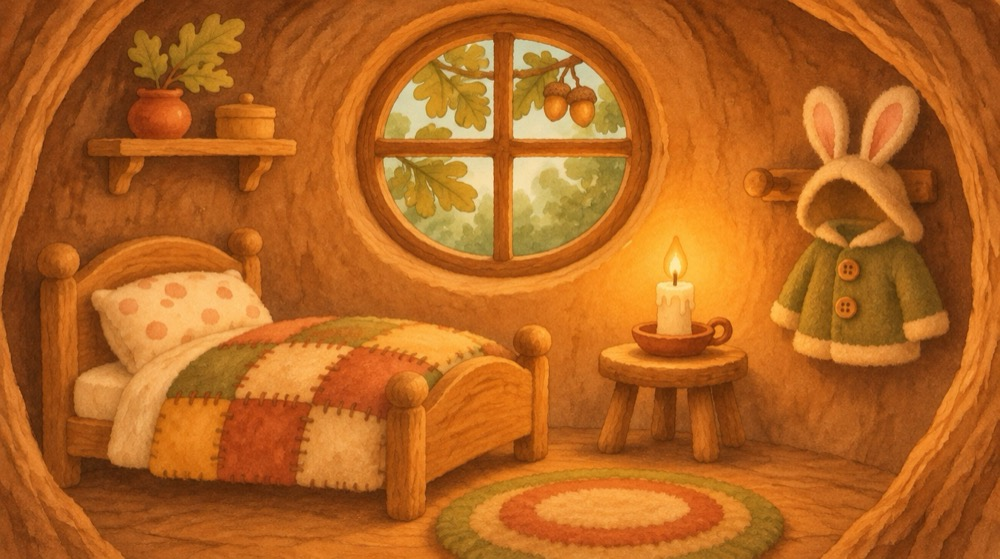

Bez strachu i napięcia
Nawet noc w Doupátkovie jest niebieska i życzliwa. Żadnych złoczyńców, żadnego straszenia przed snem.

Serial animowany dla przedszkolaków
Spokojne historie z małej wioski w starym dębie. Bez straszenia i bez pośpiechu – tylko małe dziecięce troski, życzliwi przyjaciele i zawsze dobre zakończenie.
O serialu
W starym, dziuplastym dębie ukryta jest przytulna wioska Doupátkov. Mieszka w niej ciekawski zajączek Ouško ze swoimi przyjaciółmi. Każdy odcinek to jedna prosta sytuacja, którą małe dziecko zna z własnego życia – strach przed ciemnością, dzielenie się zabawkami, nowy kolega albo burza za oknem.
Serial jest powolny i łagodny, w duchu klasycznych czeskich dobranocek. Nikt nie wygłasza morałów – dzieci same do nich dochodzą, razem z Ouškiem.
Nawet noc w Doupátkovie jest niebieska i życzliwa. Żadnych złoczyńców, żadnego straszenia przed snem.
Dzielenie się, zazdrość, przeprosiny, mycie zębów. Tematy, które dziecko właśnie przeżywa.
Każdy odcinek kończy się piosenką świerszcza Notički i poczuciem, że wszystko znów jest w porządku.
Postacie
Tylko kilkoro przyjaciół, żeby nawet najmłodsi łatwo ich zapamiętali.

ciekawski zajączek · główny bohater
Patrzy na świat z zachwytem i chce wszystkiego spróbować. Czasem popełnia błędy, ale zawsze czegoś się z nich uczy.

mądra babcia jeżyca
Robi na drutach w bujanym fotelu, parzy herbatkę ziołową i wie, co zrobić, gdy coś nie wychodzi. Z latarenką w ręku niczego się nie boi.

niezdarny, ale dobry miś
Siłacz o wielkim sercu. Lubi jeść, lubi spać, a w chowanego chowa się za kwiatkiem.

mały świerszcz muzykant
Wesołek, który wszystko załatwia piosenką. Jego skrzypeczki grają na końcu każdego odcinka.

lisiczka i trochę psotnica
Zauważa absolutnie wszystko. Przyszła do Doupátkova jako nowa koleżanka i uczy innych, co jest uczciwe.
Świat
Okrągła, miękka i ciepła. Ochra, mszysta zieleń i terakota – jakby cały las był zrobiony na drutach z wełny.




Odcinek 1 · 10 minut
Ouško bawi się z Brumlą na łące, aż robi się ciemno. W domu gaśnie mu świeczka, a na ścianie pojawia się wielki cień z długimi uszami. Babča Ježka bierze latarenkę i idzie razem z nim obejrzeć ciemność. I okazuje się, że wszystko ma życzliwe wyjaśnienie.
„Ciemność to po prostu czas, kiedy las śpi.”Babča Ježka
Odcinki
Wybierz temat, który właśnie przeżywa twoje dziecko, albo wyszukaj odcinek po tytule.
Nie znaleźliśmy takiego odcinka. Spróbuj innego słowa. 🦔
Dla rodziców
Każdy odcinek ma ten sam spokojny rytm. Dzieci wiedzą, co nastąpi, i to daje im poczucie bezpieczeństwa.
30 s
Kto, gdzie i o czym dziś będzie mowa.
6–7 min
Prosty problem, który bohater rozwiązuje po swojemu.
1–2 min
Delikatny morał – nigdy głośno ani z uniesionym palcem.
30 s
Notička gra i wszyscy się żegnają.